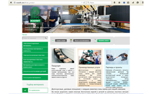 |
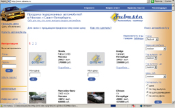 |
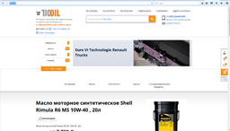 |
Сайт ООО "Росизолит" 2015 г.
(разработчик bitrix)
| Автосайт "Zubasta", 2007 г. (дизайн, разработка -
PHP/MySQL, проектирование БД, оригинальный
алгоритм, продвижение)
|
Интернет-магазин ООО "Реал Валь", 2016 г.
(адаптация готового решения "Магазин BITRONIC 2.0"
на платформе "Битрикс", настройки, участие в
интеграции с 1С, внедрение модуля интернет-эквайринга,
тестирование, наполнение).
|
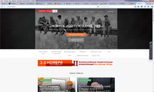 |
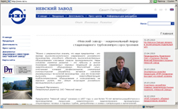 |
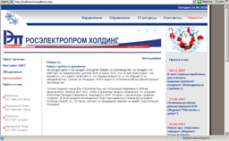 |
Сайт "Охрана труда в РФ", 2017 г.
(разработка на платформе "Битрикс")
|
Главный сайт ЗАО "Невский завод", 2006 г.
(менеджер проекта, bitrix, наполнение,
поддержка, продвижение)
|
Intranet сайт ЗАО "Росэлектропром холдинг", 2007 г.
(ТЗ, дизайн, разработка - PHP/MySQL, bitrix,
поддержка, электронный справочник
по персоналу) |
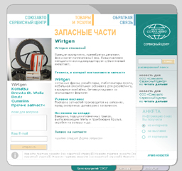 |
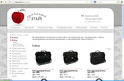 | 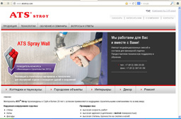
|
Союзавто Сервисный центр, 2004 г.(разработка ТЗ,
менеджер проекта) |
"Сумчатый Рай", 2011 г.
(программирование проекта на C#) |
ATS stroy 2011 г.
(программирование проекта на C#) |
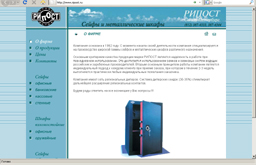
|
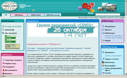
|
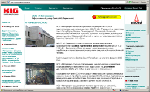 |
Сайт "Сейфы Рипост", 2004 г. (дизайн, разработка -
PHP/MySQL, проектирование БД)
|
Intranet сайт Группы предприятий Союз, 2006 г.
(редизайн, PHP/MySQL, поддержка и развитие,
эксклюзивный функционал)
|
Сайт "Deutz", 2005 г. (дизайн, разработка,
наполнение, продвижение)
|
|